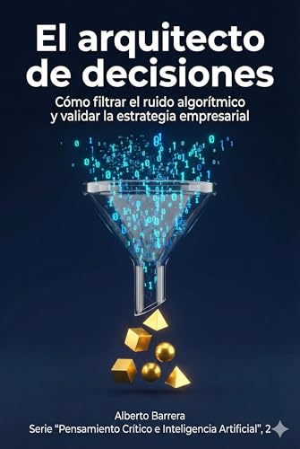
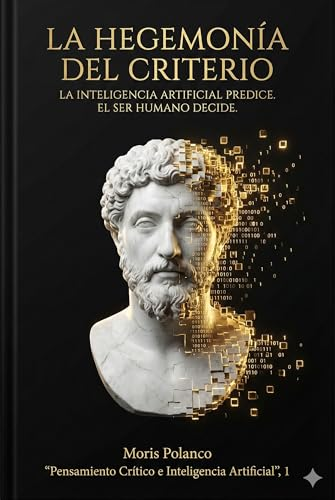

Cuando todo es artificial,
la humanidad es el nuevo lujo.
La serie definitiva para líderes que se niegan a ser reemplazados. Fusionamos el pensamiento crítico clásico con la estrategia de negocios moderna para gobernar la Inteligencia Artificial.
Más allá del hype
No es otro libro técnico sobre cómo usar ChatGPT. Es sobre cómo superar a ChatGPT usando el criterio humano que la máquina no puede replicar.
Sabiduría atemporal
Conectamos la filosofía clásica (Aristóteles, Vico, Gracián) con los problemas modernos. Porque la naturaleza humana no cambia con el software.
Defensa intelectual
Protégete de las alucinaciones de la IA, los sesgos de los datos y la manipulación algorítmica. Recupera tu soberanía mental.
¿Por qué esta serie ahora?
La serie Pensamiento Crítico e Inteligencia Artificial nace de una convicción respaldada por investigaciones contemporáneas: la inteligencia artificial está transformando de raíz el mundo del trabajo, la toma de decisiones y nuestras prácticas cotidianas, tal como argumentan Erik Brynjolfsson y Andrew McAfee en The Second Machine Age (2014).
Este cambio no es opcional ni distante; nos involucra a todos, y comprenderlo resulta tan ventajoso como necesario, una idea desarrollada con lucidez por Stuart Russell en Human Compatible (2019).
Estos libros buscan ofrecerle orientación para distinguir qué oportunidades conviene aprovechar, qué riesgos deben considerarse y qué actitudes permiten integrar la tecnología de manera provechosa. Aquí encontrará tesis claras, argumentos sustentados y, sobre todo, las implicaciones prácticas —el auténtico so what?— que pueden guiar sus decisiones personales y profesionales.
Bienvenido a este recorrido. Cada volumen abre una puerta distinta hacia el mismo objetivo: pensar mejor en una era que exige pensamiento crítico.
La colección completa
Una progresión lógica desde los fundamentos del pensamiento hasta la maestría estratégica.

La Hegemonía del Criterio
Fundamentos para pensar en la era de la máquina.
Tesis central
Este libro parte de una idea que encuentra fundamento en la advertencia de Giambattista Vico en Principi di Scienza Nuova (1744): el cálculo, por brillante que sea, no agota la comprensión humana. La tesis del volumen sostiene que la inteligencia artificial opera en el dominio de la predicción —el certum— mientras que el ser humano conserva la soberanía del criterio, esa facultad creativa y prudencial que Vico llamó ingenium. La IA calcula; el ser humano decide.
- Lógica fundamental
- Detectar Falacias
- Pensamiento de Primer Principio
- Autonomía Intelectual

El Arquitecto de Decisiones
Cómo filtrar el ruido algorítmico y validar la estrategia empresarial.
Tesis central
En entornos saturados de datos, la ventaja estratégica no es procesar más información, sino filtrar mejor (Kahneman, Sibony, Sunstein). El libro sostiene que el directivo del siglo XXI debe convertirse en un arquitecto de decisiones, capaz de cribar razones, detectar supuestos invisibles y someter a escrutinio crítico cualquier conclusión —humana o algorítmica— antes de actuar.
- Gestión de Riesgos
- Validación de Datos
- Sesgos Algorítmicos
- Estrategia vs. Táctica

El Algoritmo de la Prudencia
Estrategia y liderazgo según Baltasar Gracián para la era de la IA.
Tesis central
Este libro defiende que la mayor limitación de la IA no es técnica, sino moral: ningún sistema puede reemplazar la virtud práctica que Aristóteles llamó phronesis. Integrando las ideas de Baltasar Gracián en El oráculo manual, el volumen enseña a navegar la ambigüedad moral. Gracián se revela como un aliado moderno: su defensa del juicio propio es el antídoto contra la "moral crumple zone" de la automatización.
- Gestión de Reputación
- Estrategia Graciana
- Carácter vs. Algoritmo
- Antifragilidad
"La inteligencia artificial debe preparar el campo para ejercer el criterio, no para sustituirlo."
No seas un administrador de algoritmos.
Sé el arquitecto de tu propio destino. Empieza a leer el Volumen 1 hoy mismo.
Leer cap. 1 gratis
Lee el primer capítulo de "La Hegemonía del Criterio" ahora mismo. Sin registro.